How to Scrape Google Maps with n8n (and Send Results to Google Sheets)
A working n8n workflow that pulls Google Maps business data into a Google Sheet on demand or on a schedule. No code, no browser automation, no proxy configuration. The template is free, the actor bills about a dollar per thousand places, and the whole thing sets up in under ten minutes.
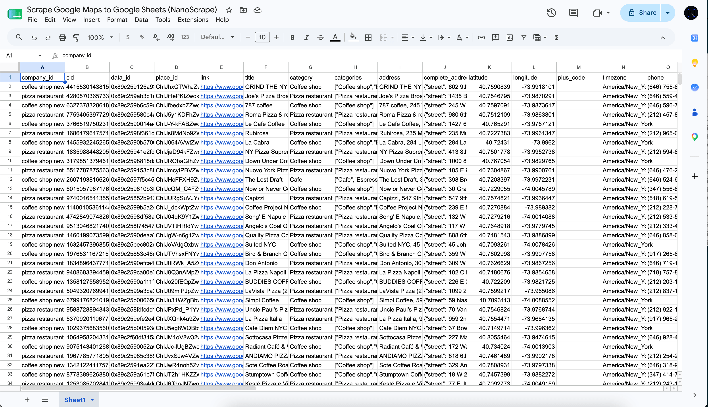
In this tutorial
- What you will build
- Prerequisites
- Step 1: Get your Apify API token
- Step 2: Import the n8n template
- Step 3: Paste your token and search query
- Step 4: Connect Google Sheets
- Step 5: Run it
- Schedule daily runs
- Add reviews, popular times, or contact emails
- Skip places you have already scraped
- Handling large runs
- What it costs
- FAQ
What you will build
A four-node n8n workflow. Click Run, and about ten seconds later a fresh batch of businesses lands in your Google Sheet with 30-plus fields per row: business name, category, full address with parsed city and postal code, phone, website, GPS coordinates, rating, review count, opening hours, price range, photos, and more.
The workflow calls the NanoScrape Google Maps Scraper under the hood. That actor is a lightweight Go binary running on Apify, roughly 80 MB in size, uses datacenter proxies, and returns results in seconds. All the field extraction, geocoding, and pagination is handled for you.
Prerequisites
- An n8n instance. Cloud, self-hosted, or Desktop all work. If you do not have one, n8n Cloud has a free trial and n8n Desktop is free forever.
- A free Apify account. Sign up at the actor page. The free tier gives you $5 of usage credit every month, which covers about 5,000 places from this scraper.
- A Google account with a fresh Google Sheet ready to receive data.
Get your Apify API token
- Open the Google Maps Scraper and click Try for free.
- Sign up with Google or email. It takes about a minute.
- Once signed in, click your avatar (top right), open Settings, then Integrations.
- Copy the Personal API token. Keep the tab open, you will paste it in a moment.
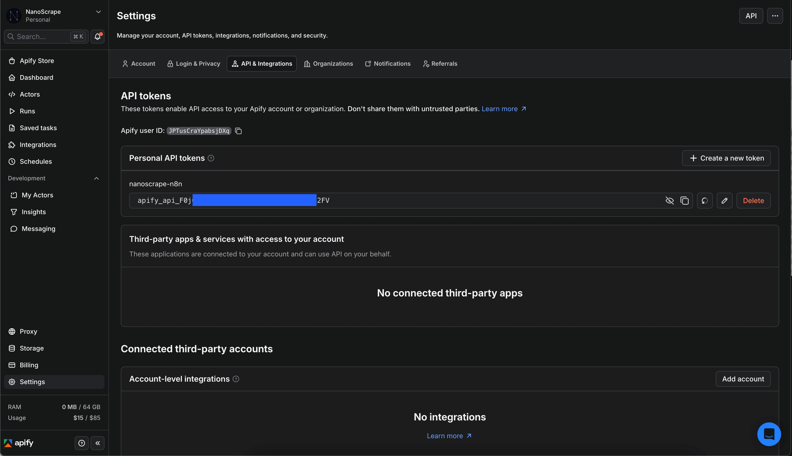
Import the n8n template
- Download the workflow: scrape-google-maps-to-google-sheets.json
- In n8n, open the workflows list. Click the three-dot menu at the top right and choose Import from File.
- Select the JSON you just downloaded.
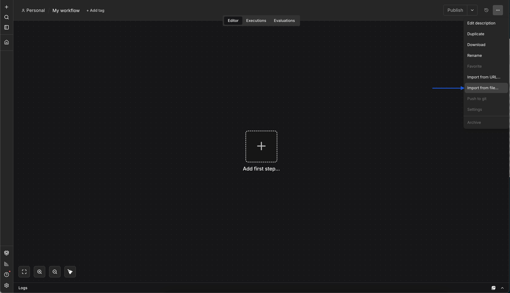
You will see three nodes wired left to right:
- Manual Trigger starts the run when you click a button.
- Run an Actor and get dataset calls the Google Maps Scraper via the verified Apify n8n node. It handles the run, waits for completion, and returns the dataset items.
- Append to Google Sheet writes one row per business.
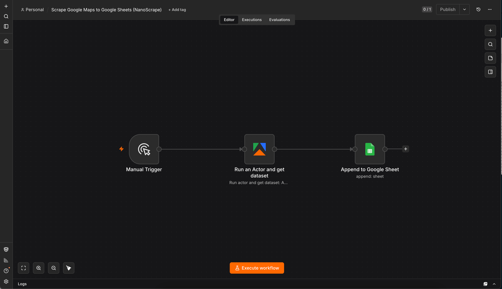
@apify/n8n-nodes-apify. On n8n Cloud it is pre-installed.Add your Apify credential and review the input
Open the Run an Actor and get dataset node. At the top, click the Credential to connect with dropdown and choose Create new credential. Paste the Personal API token you copied in step 1, name it something like "Apify account", and save.
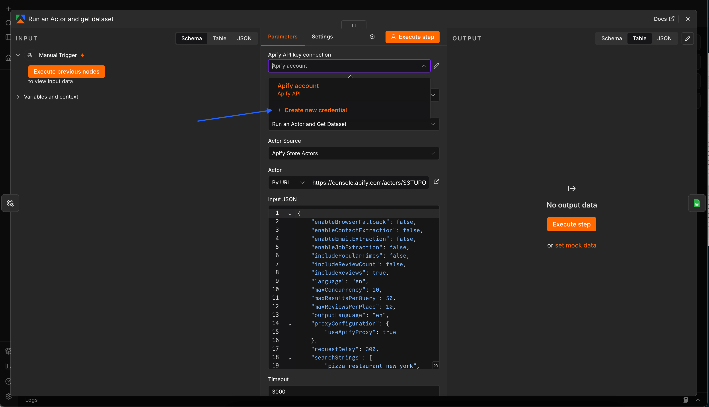
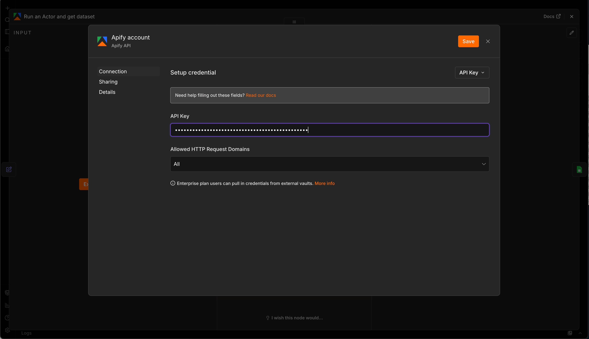
Below the credential, the template pre-fills the Input JSON with a working configuration. This is the same JSON you would paste into the actor's Input tab on Apify Console:
{
"searchStrings": [
"pizza restaurant new york",
"coffee shop new york"
],
"maxResultsPerQuery": 50,
"language": "en",
"includeReviews": true,
"maxReviewsPerPlace": 10,
"outputLanguage": "en",
"proxyConfiguration": { "useApifyProxy": true },
"maxConcurrency": 10,
"requestDelay": 300
}Adjust the fields you care about and leave the rest at their defaults:
searchStrings: an array of one or more queries. Include the location in each string. Examples: coffee shops in Berlin, Zahnarzt Zurich, law firms Manhattan. Every query runs in parallel.maxResultsPerQuery: how many places per query, up to 120 (Google Maps page limit).language: ISO 639-1 code (en,de,fr,ja,es, ...). Use the local language for best results in non-English regions.includeReviews: keep this on to get featured reviews with each place. See the enrichment section below for the full list of add-ons.
Create a Google Sheet and connect it
- Go to Google Sheets and create a new blank spreadsheet. Leave the first row empty. The n8n node handles headers automatically.
- Copy the spreadsheet ID from the URL. It is the long string between
/d/and/edit.
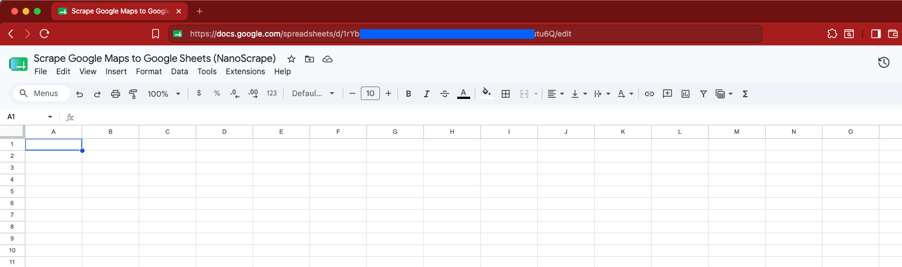
/d/ and /edit.- In n8n, open the Append to Google Sheet node.
- Paste the spreadsheet ID into the Document ID field.
- Leave the sheet name as
Sheet1if that is what your tab is called, otherwise update it. - Click the Credential to connect with dropdown at the top of the node. Pick an existing Google Sheets credential or click Create New to walk through the Google OAuth flow.
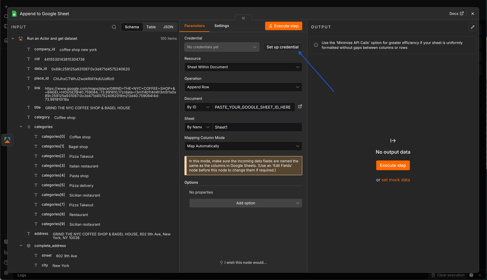
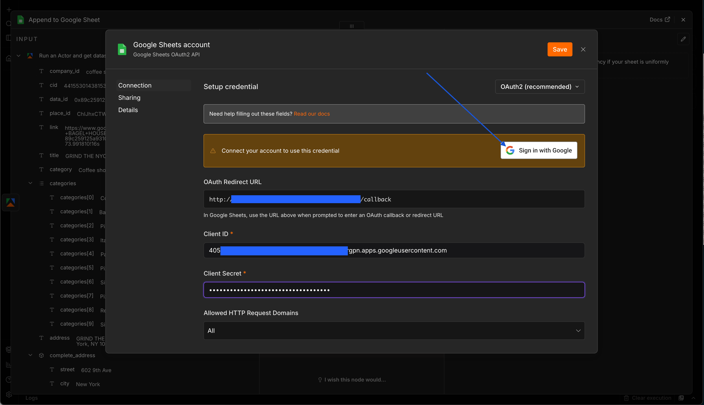
Back in the node, confirm the Document ID and Sheet Name are set, and save.
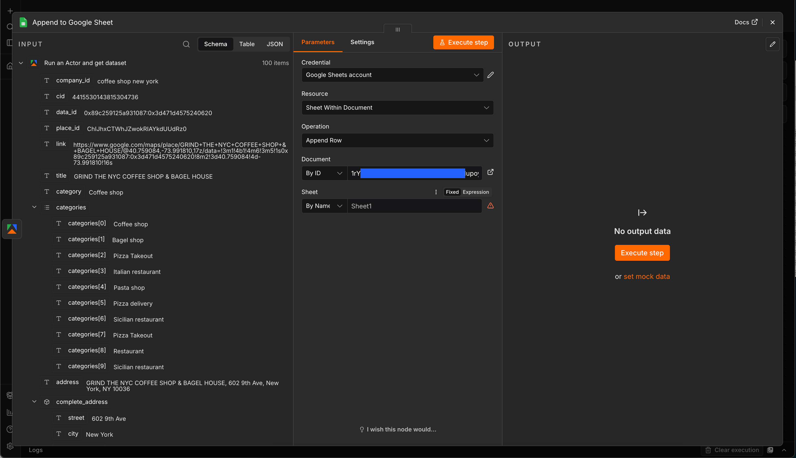
Run it
Click Test Workflow at the bottom left. Each node lights up green as it runs. Depending on maxResultsPerQuery and how many search strings you added, the run finishes in roughly ten to sixty seconds. Open your Google Sheet: one row per business, with columns for name, address, phone, website, rating, review count, opening hours, GPS coordinates, and around 25 other fields.
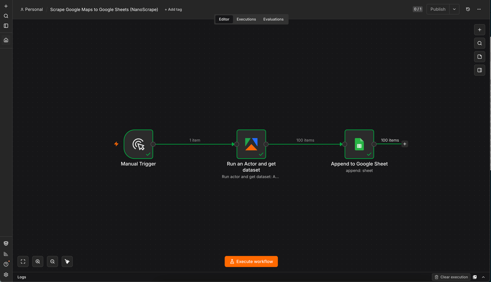
If something goes wrong, click the node with the red icon and read the error panel on the right:
- Apify credential errors: your token is wrong, has a trailing space, or was revoked. Recreate the credential and paste it again.
- Not enough credit: your Apify account has exhausted its free-tier balance. Check Apify Console › Billing.
- Empty output: the search query returned no results. Try something less specific, or check that the location in the query string exists on Google Maps.
- Google Sheets error: the spreadsheet ID is wrong or the sheet name does not match a tab in the file.
Schedule daily runs
Replace the Manual Trigger with a Schedule Trigger node. Set the interval to once a day, once a week, or a cron expression of your choice. Every morning your sheet will grow with fresh data for the search terms you configured.
To keep the sheet clean, either clear it at the start of each run (add a Google Sheets "Clear" node before the Append), or skip already-scraped places (see the next section).
Add reviews, popular times, or contact emails
The Google Maps Scraper has several optional enrichments that stack on top of the basic scrape. Enable them by editing the Input JSON field of the Run an Actor and get dataset node.
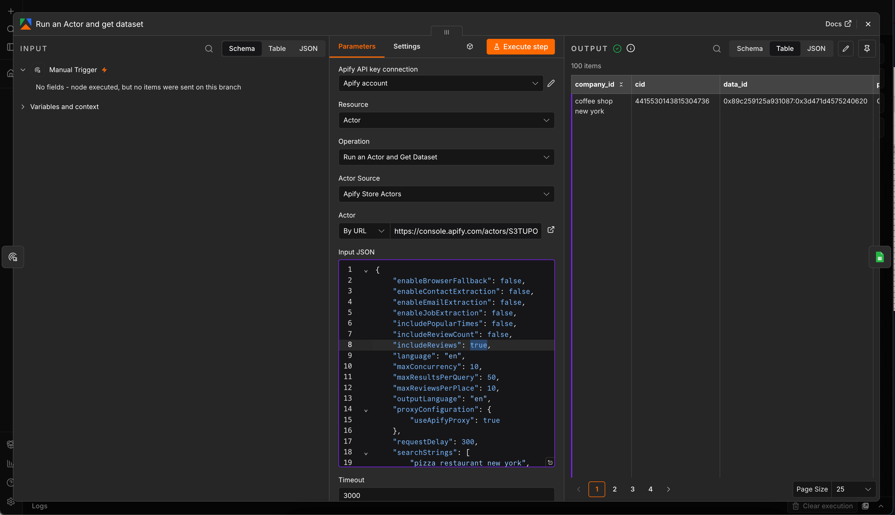
Featured reviews
Set "includeReviews": true (it is already enabled in the default template) and each place gets a user_reviews array with author name, star rating, publication date, and review text. Adds about 300 ms per place.
{
"searchStrings": ["restaurants in Paris"],
"maxResultsPerQuery": 20,
"includeReviews": true,
"maxReviewsPerPlace": 10,
"reviewsSort": "newest"
}Sort options: most_relevant (default), newest, highest_rating, lowest_rating. To only pull reviews from the last month, add "reviewsNewerThan": "2026-06-14".
Popular times histogram
Add "includePopularTimes": true and each place gets a popular_times object with visitor-traffic scores by weekday and hour (0 to 100). Great for finding low-traffic time slots. Adds about 1.5 seconds per place.
Contact email extraction
Add "enableContactExtraction": true and "geminiApiKey": "your-gemini-key". After the Maps scrape completes, an AI-powered add-on visits every business website found in the results and extracts team member names, emails, phone numbers, and departments. Great for turning a lead list into a contact list in one step. Get a free Gemini API key at Google AI Studio.
Skip places you have already scraped
Every place on Google Maps has a stable identifier called a CID. It does not change even if the business renames or moves. To avoid re-collecting places on scheduled runs, pass an array of CIDs in the excludeCids parameter.
{
"searchStrings": ["cafes in Zurich"],
"maxResultsPerQuery": 100,
"excludeCids": ["12345678901234567", "98765432109876543"]
}A common pattern in n8n: read the CID column from your existing sheet with a Google Sheets "Read" node, feed it into a Set node that builds the array, then reference that array in the Apify node's Input JSON via an expression.
Handling large runs
The Apify n8n node manages the run lifecycle for you: it starts the actor, waits for completion, and returns the dataset items. For big jobs, just bump the Timeout field in the node's options (defaults to 3000 seconds, plenty for tens of thousands of places).
If you want to run a very long job in the background and check on it later, switch the operation to Run Actor (without and get dataset) to start the run without waiting, then add a second node with Get dataset items that runs on a schedule.
What it costs
- Apify actor: $1.00 per 1,000 places. All 30-plus fields included. Reviews and popular times are free add-ons. Contact extraction is billed separately by the sub-actor.
- n8n: free on Desktop and self-hosted. n8n Cloud starts at $20/month.
- Google Sheets: free.
A daily workflow that pulls 100 new places every morning runs at about $3 per month. A weekly workflow that pulls 1,000 places every Monday runs at $4 per month.
FAQ
Do I need a paid Apify plan to run this?
No. The free tier includes $5 of usage credit every month, enough for around 5,000 places from this actor. You only pay if you go over.
Does the template work with n8n Cloud, self-hosted, and Desktop?
Yes, all three. It uses n8n's core Manual Trigger and Google Sheets nodes plus the verified Apify node. On n8n Cloud the Apify node is available immediately. On self-hosted or Desktop, install it once from Settings › Community Nodes › Install with the package name @apify/n8n-nodes-apify.
Can I send results to Airtable, PostgreSQL, or Notion instead?
Yes. Replace the Google Sheets node at the end of the workflow with whatever destination you prefer. All incoming fields are auto-mapped, so you just need to point the new node at your target and pick which fields to keep.
How do I search multiple queries in one run?
Two options. Simple approach: add more strings to the searchStrings array in the Apify node's Input JSON (the template already ships with two example queries). Advanced approach: use the structured queries parameter, which lets you attach your own company_id per query and separate the search term from the location and country code. The actor README has examples.
Can I collect email addresses too?
Yes. Set enableContactExtraction to true and provide a Gemini API key. The scraper visits every business website found in the results and extracts team member emails, names, positions, and phone numbers using AI.
What if I want to scrape more than 500 places in one query?
Google Maps returns at most about 120 results per single query. For broader coverage, split the search by neighborhood, category, or sub-region and run each as a separate search string. For example, instead of "restaurants in London", try "restaurants in Shoreditch", "restaurants in Camden", "restaurants in Notting Hill".
How fresh is the data?
Every scrape hits Google Maps live. There is no cached data. Whatever Google shows at the moment of the run is what you get in your sheet.
Is scraping Google Maps legal?
Scraping publicly available data is generally permitted in most jurisdictions, but the specifics depend on where you and your users are located and what you do with the data. The hiQ Labs v. LinkedIn ruling in the US established that scraping public data is not a violation of the Computer Fraud and Abuse Act. GDPR still applies to any personal data you collect. Consult a lawyer if you have specific compliance questions.
Related resources
- Google Maps Scraper on Apify: full actor documentation, all input parameters, complete field reference.
- NanoScrape actor page: quick-reference specs, pricing, use cases.
- Download the n8n template used in this tutorial.
- All templates: n8n, Make, and Zapier workflows for other NanoScrape actors.